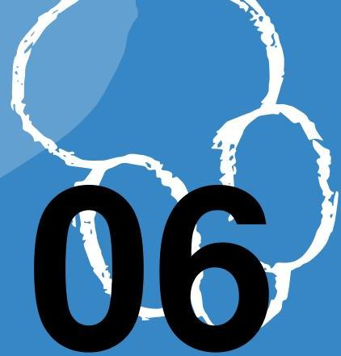
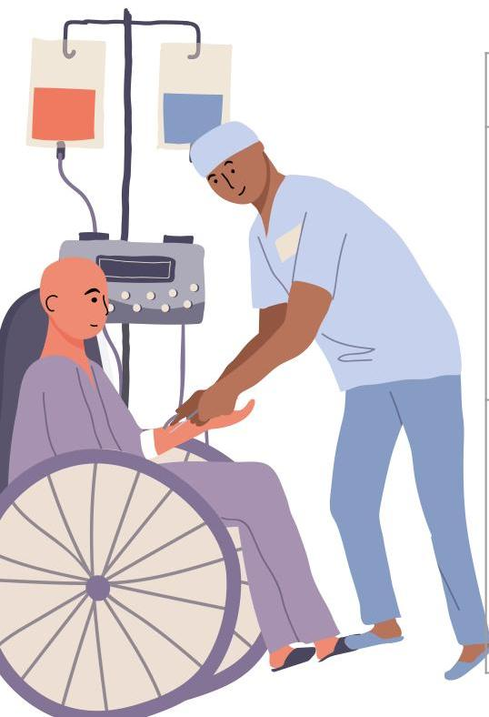
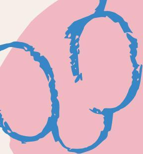

🩺
Topic 06
Care of Specific Cancers

01
Cancer of the Larynx
Assessment Findings
- Hoarseness of voice (most usual)
- Mass on anterior neck
- Dysphagia, burning sensation with hot/acidic beverages
- Halitosis
- Hemoptysis
Collaborative Management
Surgery: Laryngectomy
- Subtotal: Retains voice
- Total: Absolute loss of voice, permanent tracheostomy, loss of sense of smell. Inability to blow, sip, whistle, gargle, or perform Valsalva maneuver.
Preoperative Priority
Establish means of communication to be used post-operatively before the surgery is performed.
Nursing Interventions: Tracheostomy Care
| Goal | Procedure/Intervention |
|---|---|
| Establish Patent Airway |
|
| Prevent Infection |
|
02
Lung Cancer
Assessment Findings
- Cough (hacking, nonproductive initially, then thick, purulent blood-tinged sputum)
- Pleural effusion
Surgical Management
Surgical Procedures
- PNEUMONECTOMY
- Removal of a lung. No chest tube after surgery.
Positioning: Semi-fowler's, turned on affected side (to promote expansion of remaining lung). Avoid full side-lying to prevent mediastinal shift.
- LOBECTOMY
- Removal of a lobe.
- SEGMENTECTOMY
- Removal of a segment.
- WEDGE RESECTION
- Removal of an entire tumor regardless of the segment.
03
Breast Cancer
Staging
| Stage I | Tumor size up to 2cm. |
| Stage II | Tumor size up to 5cm with axillary lymph node involvement. |
| Stage III | Tumor size > 5cm, with axillary and neck lymph node involvement. |
| Stage IV | Metastasis to distant organs (liver, lungs, bone, brain). |
Collaborative Management
Surgery
- Lumpectomy: Removal of the lump.
- Simple Mastectomy: Removal of entire breast; muscles/nipple intact.
- Modified Radical Mastectomy (MRM): Removal of breast and axillary nodes; muscles conserved.
- Radical Mastectomy (Halstead): Removal of breast, muscles, and nodes. Rarely done.
Nursing Interventions: Post-operative Care

| Intervention | Rationale |
|---|---|
| Positioning | Semi-Fowler's with arm abducted and elevated on pillows to promote venous return and prevent lymphedema. |
| Bleeding Check | Check behind the patient (blood flows by gravity). |
| Restrictions | NO blood pressure, IVs, or blood draws on the affected side. Post warning signs. |
| Exercises | Initiate hand/arm exercises. Give analgesic before exercises. Prevents stiffness/contractures. |
04
Colorectal Cancer
Assessment Findings
| Ascending (Right) Colon | Distal Colon & Rectum |
|---|---|
| Occult blood in stool | Hematochezia (fresh blood) |
| Anemia | Alternating constipation & diarrhea |
| Anorexia & weight loss | Pencil or ribbon-shaped stool |
| Palpable mass, pain above umbilicus | Pain below umbilicus |
Surgical Management
- Hemicolectomy: For ascending and transverse colon.
- Abdominoperineal Resection (APR/Mile’s Surgery): For rectosigmoid. Involves 2 incisions (abdominal and perineal). Requires permanent colostomy.
Nursing Interventions
Preoperative Care (Bowel Prep)
- Diet: Low residue diet 3-5 days preop; Clear liquids 24h preop.
- Cleansing: Laxatives, enemas, Neomycin SO4 tablets (to reduce bacteria).
- Meds: Administer Vitamin C and K (lost due to repeated enemas).
Postoperative Care
- Perineal Wound (APR): Warm sitz bath, side-lying position.
- Stoma Monitoring: Check for ischemia/necrosis. Flatus/drainage begins in 4-7 days.
05
Bladder Cancer
Key Sign
The most characteristic manifestation is painless hematuria.
Urinary Diversions
Used after removal of bladder (Cystectomy).
- Ileal Conduit
- Ureters are implanted into a segment of ileum which is brought to the surface as a stoma.
- Koch Pouch
- Pouch created from ileum; ureters implanted into side. Client inserts straight catheter q 4-6 hours.
- Indiana Pouch
- Continent reservoir created from ascending colon and terminal ileum.
- Ureterostomy
- Ureters are attached directly to the surface of the abdomen.

Knowledge Check
Test Your Understanding
Complete this quiz to assess your comprehension of Care for Specific Cancers.
Loading quiz...